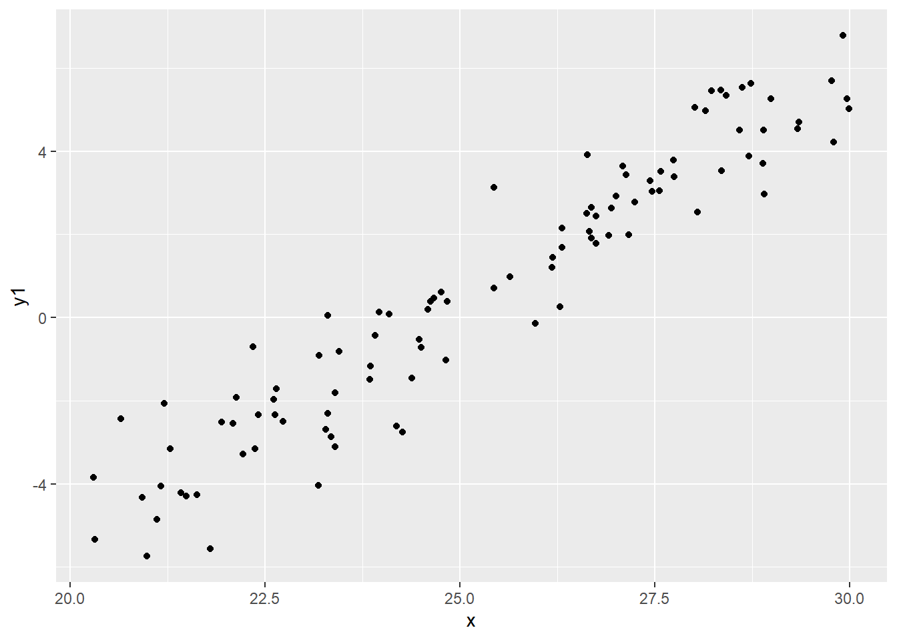
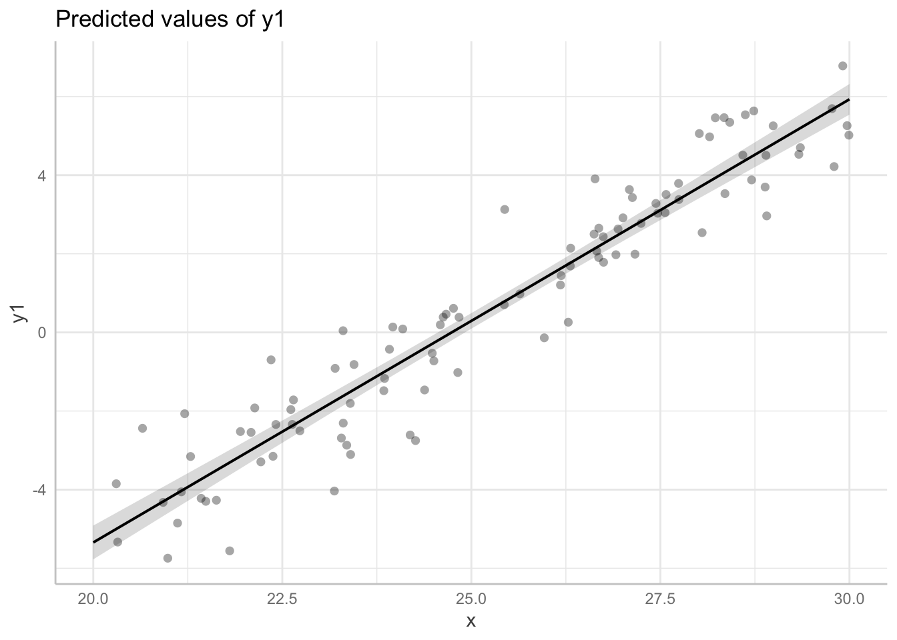
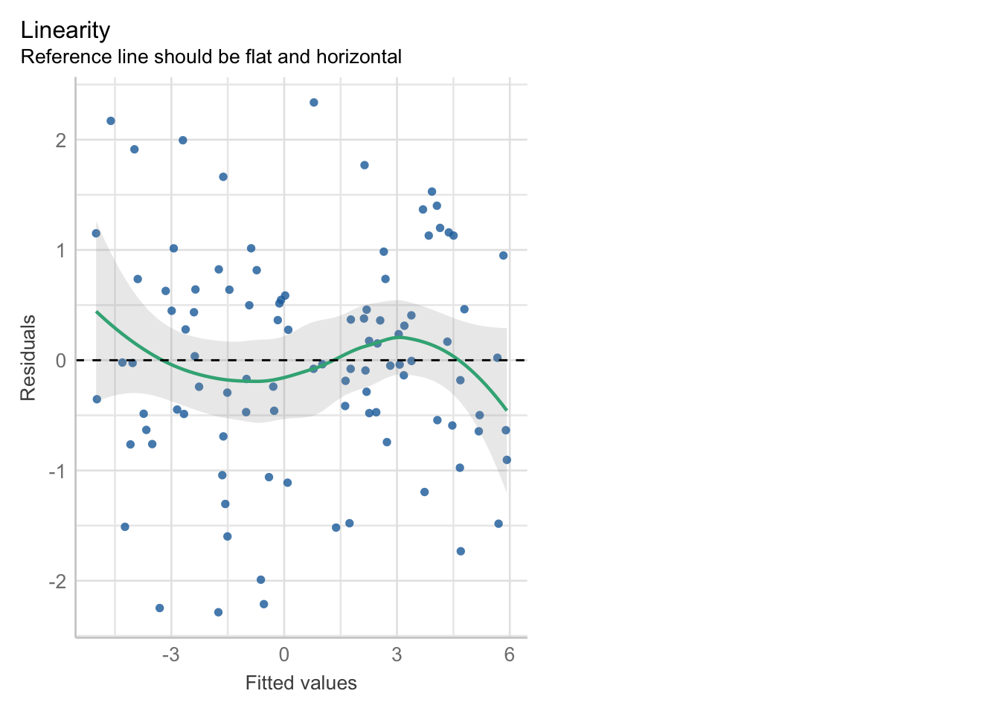
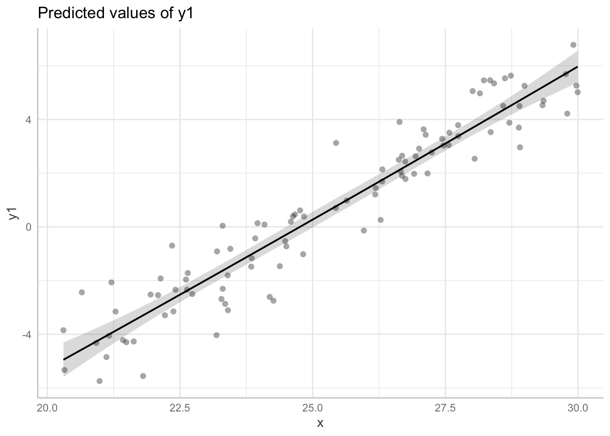
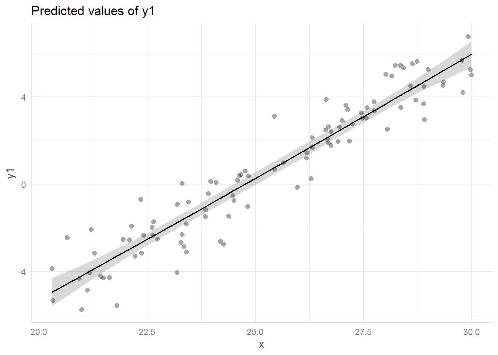
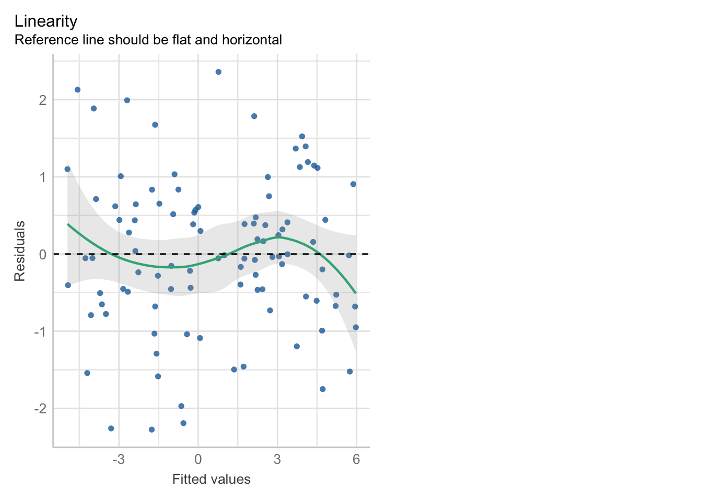

── Attaching core tidyverse packages ──────────────────────── tidyverse 2.0.0 ──
✔ dplyr 1.1.4 ✔ readr 2.1.5
✔ forcats 1.0.0 ✔ stringr 1.5.1
✔ ggplot2 3.5.1 ✔ tibble 3.2.1
✔ lubridate 1.9.3 ✔ tidyr 1.3.1
✔ purrr 1.0.2
── Conflicts ────────────────────────────────────────── tidyverse_conflicts() ──
✖ dplyr::filter() masks stats::filter()
✖ dplyr::lag() masks stats::lag()
ℹ Use the conflicted package (<http://conflicted.r-lib.org/>) to force all conflicts to become errors# Attaching packages: easystats 0.7.2
✔ bayestestR 0.13.2 ✔ correlation 0.8.5
✔ datawizard 0.11.0 ✔ effectsize 0.8.9
✔ insight 0.20.1 ✔ modelbased 0.8.8
✔ performance 0.12.0 ✔ parameters 0.22.0
✔ report 0.5.8 ✔ see 0.8.4
Attaching package: 'ggeffects'
The following object is masked from 'package:easystats':
install_latest## Read data from file
polysim <- read_csv("polysim.csv")Rows: 100 Columns: 4
── Column specification ────────────────────────────────────────────────────────
Delimiter: ","
dbl (4): x, y1, y2, y3
ℹ Use `spec()` to retrieve the full column specification for this data.
ℹ Specify the column types or set `show_col_types = FALSE` to quiet this message.polysim# A tibble: 100 × 4
x y1 y2 y3
<dbl> <dbl> <dbl> <dbl>
1 24.7 0.464 0.660 -3.24
2 23.4 -2.87 2.27 7.32
3 21.6 -4.27 -11.9 4.69
4 24.0 0.137 0.263 11.7
5 20.3 -3.85 -17.7 -51.1
6 21.2 -2.07 -9.68 -2.43
7 24.3 -2.75 -0.193 6.20
8 26.2 1.21 0.923 -13.1
9 22.6 -2.34 -3.93 7.80
10 24.8 0.612 3.07 -1.46
# ℹ 90 more rows## Plot x-y1 relationship
ggplot(data = polysim, mapping = aes(x = x, y = y1)) + geom_point()
# ==============================================================================
# LM for a linear relationship example
## Fit linear model
fit1 <- lm(
formula = y1 ~ x,
data = polysim
)
model_parameters(fit1) |> print_md()| Parameter | Coefficient | SE | 95% CI | t(98) | p |
|---|---|---|---|---|---|
| (Intercept) | -27.89 | 0.92 | (-29.72, -26.06) | -30.25 | < .001 |
| x | 1.13 | 0.04 | (1.06, 1.20) | 31.13 | < .001 |
predict_response(fit1, terms = "x") |> plot(show_data = TRUE)Data points may overlap. Use the `jitter` argument to add some amount of
random variation to the location of data points and avoid overplotting.
## Check linearity assumption
check_model(fit1, check = "linearity") # good enough
# ==============================================================================
# LM with raw polynomials example
## Fit raw polynomial model
fit1b <- lm(
formula = y1 ~ x + I(x^2),
data = polysim
)
model_parameters(fit1b) |> print_md() # both are nonsignificant| Parameter | Coefficient | SE | 95% CI | t(97) | p |
|---|---|---|---|---|---|
| (Intercept) | -25.97 | 9.37 | (-44.57, -7.38) | -2.77 | 0.007 |
| x | 0.97 | 0.75 | (-0.51, 2.46) | 1.30 | 0.197 |
| x^2 | 3.05e-03 | 0.01 | (-0.03, 0.03) | 0.21 | 0.838 |
predict_response(fit1b, terms = "x") |> plot(show_data = TRUE) # unchangedData points may overlap. Use the `jitter` argument to add some amount of
random variation to the location of data points and avoid overplotting.
## Check linearity and collinearity assumptions
check_model(fit1b, check = "linearity") # still acceptable
check_collinearity(fit1b) # problematically high# Check for Multicollinearity
High Correlation
Term VIF VIF 95% CI Increased SE Tolerance Tolerance 95% CI
x 423.33 [292.35, 613.19] 20.57 2.36e-03 [0.00, 0.00]
I(x^2) 423.33 [292.35, 613.19] 20.57 2.36e-03 [0.00, 0.00]# ==============================================================================
# LM with orthogonal polynomials example
## Fit orthogonal polynomial model
fit1c <- lm(
formula = y1 ~ poly(x, degree = 2),
data = polysim
)
model_parameters(fit1c) |> print_md() # first degree is significant| Parameter | Coefficient | SE | 95% CI | t(97) | p |
|---|---|---|---|---|---|
| (Intercept) | 0.65 | 0.10 | (0.45, 0.85) | 6.54 | < .001 |
| x (1st degree) | 30.78 | 0.99 | (28.80, 32.75) | 30.98 | < .001 |
| x (2nd degree) | 0.20 | 0.99 | (-1.77, 2.18) | 0.21 | 0.838 |
predict_response(fit1c, terms = "x") |> plot(show_data = TRUE) # unchangedData points may overlap. Use the `jitter` argument to add some amount of
random variation to the location of data points and avoid overplotting.
## Check linearity assumption
check_model(fit1c, check = "linearity") # still acceptable